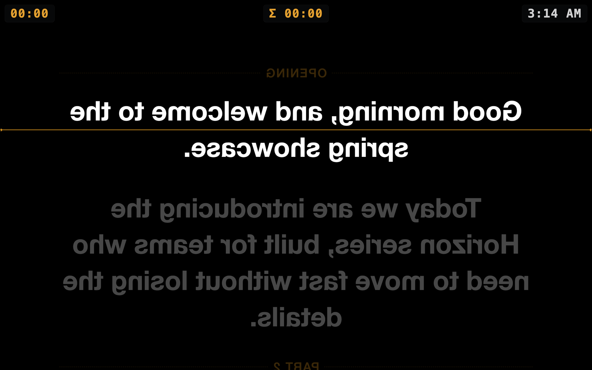
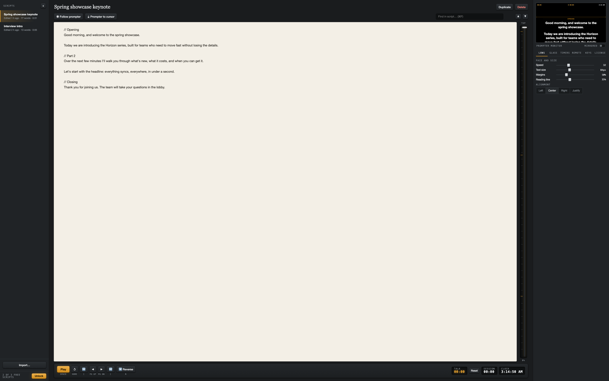
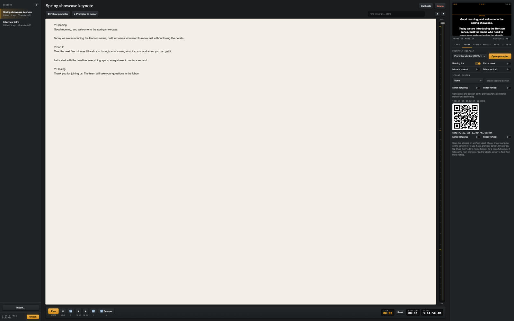
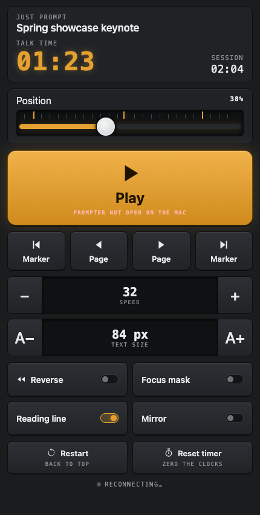

Just Prompt runs a mirror rig from a Mac or PC, puts the same script on an iPad or any tablet over Wi-Fi with no cable or extra app, and hands every control to your phone, a clicker, or the keyboard. One purchase, no subscription.

On air Prompter monitor · mirrored for the glassThe control window puts the words where your eyes are: a light page in the middle, the transport keys below it, and the glass preview beside it so you can see the rig without walking round the camera.
// becomes a divider you can jump between from the keyboard, the clicker, or the phone.
Pick the display behind your beam-splitter and the text fills it, flipped to match your glass. A second monitor can carry the same script unmirrored for a confidence screen.


Scan a code and any phone on your Wi-Fi becomes the remote: play, pause, speed, size, markers, reverse, and a position slider you can drag. Nothing to install.
Open a second address on an iPad, Android tablet, or spare laptop and it becomes a prompter screen that follows the main one, with its own mirror setting. No cable, no Sidecar, no extra app.
The key monitor shows what your USB clicker or foot pedal sends. One click makes it play and pause. Every shortcut is rebindable, including double-presses.
Hold Faster or A+ on the phone and it keeps stepping. Each key flashes and buzzes so you know it registered without looking.
Left, centred, right, or justified. Change the text size mid-read without losing your place.
Space, arrows, Page keys, Home, R, F, L, [ and ]. All rebindable, with clicker presets.
Saved on your computer, never uploaded. Word count and read time on every script.
A confidence monitor or a second rig, from any display or any tablet.
Drag to anywhere in the script. Ticks show your markers.
One license works on up to three of your own computers, either platform.
Your first three scripts are free, with every feature, which is enough to run a real shoot. Unlocking removes the limit on your computer, forever. No subscription, no account, nothing collected.
On the Mac App Store the unlock is an in-app purchase. On Windows and direct downloads it's a license key sent by email.
A four-minute tour of everything above.